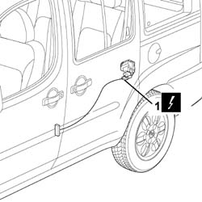
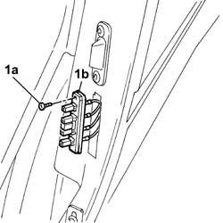

5505B30 wiring built into sliding side door left or right r r
- Path
- Procedures > 55 ELECTRICAL EQUIPMENT > 5505 ELECTRICAL CIRCUIT FOR INSTRUMENTS/INDICATORS > 5505B door,boot and bonnet wiring. > 5505B30 wiring built into sliding side door left or right r r
- Kind
- repair procedure (removal / refitting; the operation number is the code)
- Applies to
- all engines; all production periods
- Interactive page
- https://sloeber94.github.io/elrnDB-fDbl/en/#/2584884
Applies to: all engines; all production periods
 Removing
Removing
 Refitting
RefittingDisconnect the battery negative terminal.
Applies to: all engines; all production periods; only with equipment: Cargo trim level
Applies to: all engines; all production periods; only with equipment: Doblò trim level
Op. 7020C36 ODDMENTS POCKET ON ONE SLIDING SIDE DOOR, L.H. OR R.H. - R.R.
Applies to: all engines; all production periods; only with equipment: Cargo trim level and Doblò trim level
1. Disconnect the electrical connector from the lock motor.
Name | Connector | |
|---|---|---|
1 | Left rear door lock geared motor |
Name | Connector | |
|---|---|---|
1 | Right rear door lock geared motor |

Applies to: all engines; all production periods; only with equipment: Cargo trim level and Doblò trim level
1. Undo the fixing bolt (1a) and release the sliding contact (1b) from the housing.

Applies to: all engines; all production periods; only with equipment: Cargo trim level and Doblò trim level
Release the electrical wiring from the retaining springs and remove it.
Applies to: all engines; all production periods
Refitting
RemovingCheck that the wiring is not damaged.
If necessary, conduct a continuity test on the electrical wiring.
Renew the correct routing for the electrical wiring and secure it to the retaining bands.
Tighten the bolt and secure the sliding contact to the sliding door.
Connect the electriacl connector for the door lock geared motor.
 | Name | Connector |
|---|---|---|
- | Left rear door lock geared motor |
| Name | Connector |
|---|---|---|
- | Right rear door lock geared motor |
Applies to: all engines; all production periods; only with equipment: Cargo trim level
Applies to: all engines; all production periods; only with equipment: Doblò trim level
Op. 7020C36 ODDMENTS POCKET ON ONE SLIDING SIDE DOOR, L.H. OR R.H. - R.R.
Applies to: all engines; all production periods; only with equipment: Cargo trim level and Doblò trim level
Connect the battery negative terminal.